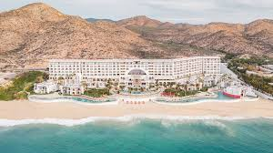

Lugares relajantes del lugar a donde deseas ir

Cancún es un destino cosmopolita, una ciudad llena de actividades y atractivos turísticos que llenan de vida cada uno de sus rincones. Y aunque muchos piensan que en Cancún solo hay noches de fiesta y tardes de playa, la realidad es que esta ciudad tiene mucho que ofrecerte . Aquí encontrarás una amplia oferta de entretenimiento , incluyendo actividades que te permitirán alejarte por completo del estrés.

La mejor zona para hospedarse en Cabo San Lucas es la playa el Médano, situada cerca de la Marina y del centro de la ciudad. Es la playa más concurrida de la ciudad y la que cuenta con más servicios.

¿Cuánto cuesta aproximadamente un viaje a París con todo incluido? Si prefieres presupuestar todos los servicios dentro de un paquete, evalúa que un viaje a París con todo incluido puede costar entre $400 y $700 EUR, o $100,000 y $200,000 MXN por persona.

La amplia piscina del Palazzo cuenta con cuatro acres de piscinas (incluida una opción familiar), fuentes y jacuzzis. ¿Hambriento? Solaro de Wolfgang Puck sirve pizzas y sándwiches en un ambiente informal al aire libre, además de una variedad de jugos de su barra de jugos. La piscina está abierta sólo para los huéspedes del hotel, pero hay un club diurno, Azure, que está abierto al público.

Gran Jones Spa, NoHo Alejado de las bulliciosas calles, del tráfico y de las sonoras bocinas del muy de moda vecindario NoHo, Great Jones Spa les ofrece a los visitantes acceso a un extraordinario mundo de mimos y relajación. El espacio subterráneo cuenta con una cascada de tres pisos y un salón decorado estilo feng-shui, bien equipado con regadera de agua caliente, sauna con piedras de río, cuarto de vapor con luz de chakra y una alberca de inmersión.

Lagos y remansos de Kerala El estado sureño de Kerala es conocido por su red de lagunas, lagos, ríos y canales. Sólo pensar en estar rodeado de agua es suficiente para provocar un estado de relajación, y la realidad es mucho mejor. Una o dos noches a bordo de una casa flotante privada es una forma tranquila de viajar y no hay mucho más que hacer que sentarse y contemplar los paisajes que pasan y la vida cotidiana en los remansos. Si prefieres quedarte en tierra firme, hay algunos hoteles y casas de familia a orillas del lago que están llenos de encanto y carácter. Si deseas un refugio que combine patrimonio y un bello entorno natural, no busques más que Coconut Lagoon. Debido a su ubicación en la orilla oriental, menos desarrollada, del lago Vembanad, sólo se puede llegar en barco y proporciona esa sensación de alejamiento.

Su ambiente íntimo, parece perfecto, es punto estratégico de visita por los turistas ya que ha mantenido su concepto de relajado y tranquilo, perfecto para una caminata a la orilla del mar, disfrutar de sus piscinas naturales o relajarse en las cabañas que ofrecen masajes con vista a la Bahía.

Los lotos florecen bajo el sol y proporcionan al parque una maravillosa fragancia veraniega. [Foto/proporcionada a Chinadaily.com.cn]
Algunas agencias